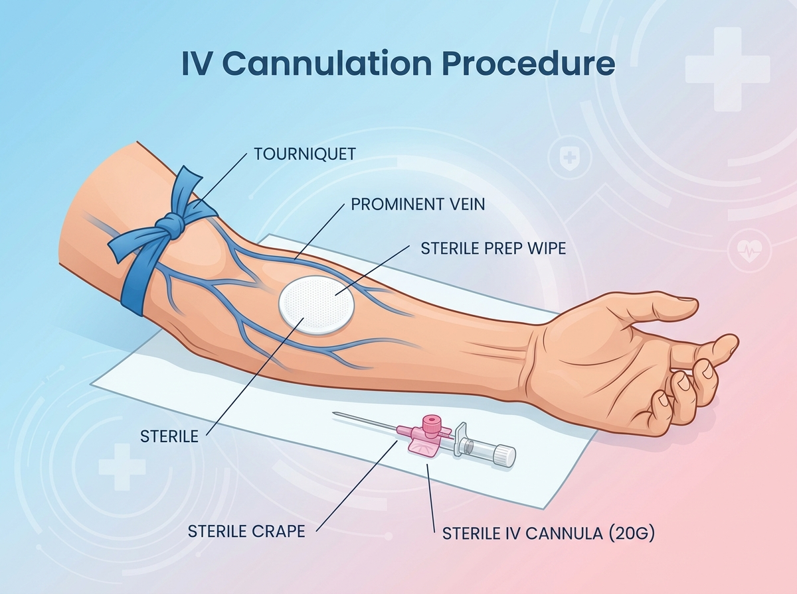

Intravenous Cannulation
Revision of venipuncture site selection, sterile skin preparation, proper insertion angle, flashback checks, and securing.
Revision Progress
0%
Intravenous Cannulation
Narrated Revision • Ambient Backing Track

Revision Checklist
Audio-Slideshow revision
Step 1 of 5